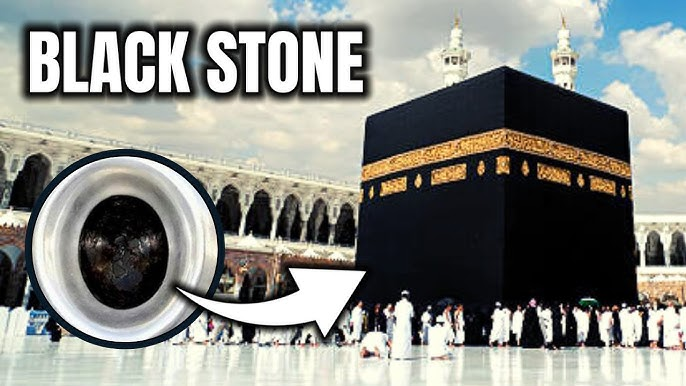
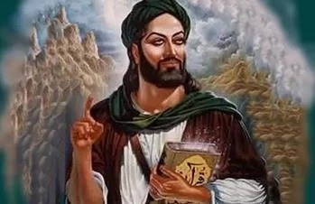
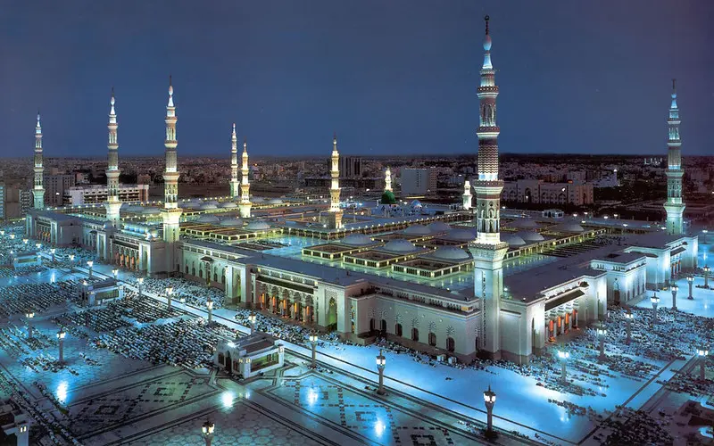
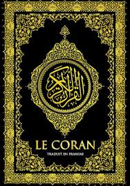
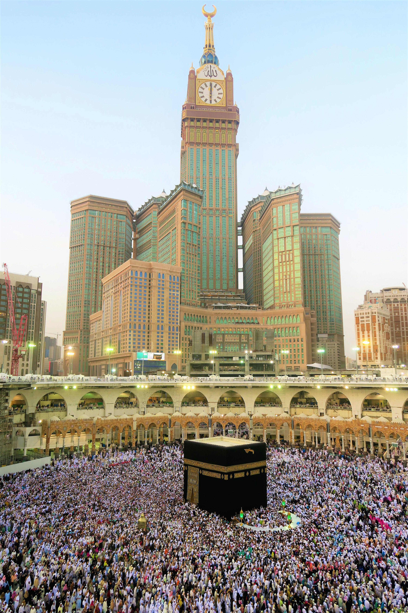

Islamul este a doua mare religie a
lumii, cu peste 1,9 miliarde de credincioși. Numele „islam”
înseamnă „pace și supunere" (față de
Dumnezeu) și provine din cuvântul arab „salam" care înseamnă
"pace". Astăzi vom explora originile, dezvoltarea și principalele
învățături ale acestei religii monoteiste.
Începutul
Povestea Islamului începe cu mult înainte de nașterea profetului
Mahomed. Conform Bibliei, Avraam și soția lui Sara nu puteau avea
copii și înaintau în vârstă. În această situație Sara i-a sugerat
lui Avraam să facă un fiu cu slujnica ei, Agar. Așa s-a născut
Ismail, considerat astăzi
strămoșul arabilor .
Dar la scurt timp Sarra a reușit să nască și ea un fiu lui Avraam,
pe Isaac. În acest moment tensiunile din familie au crescut, iar
slujnica Agar și fiul ei Ismail au fost alungați de la casa lui
Avraam, aceștia ajungând în
deșertul Peninsulei Arabia.
Lupta pentru supraviețuire
Istoria islamului ne spune că în deșert, Ismail și mama sa erau pe
punctul de a muri de sete. Furios, Ismail a lovit pământul cu
piciorul, iar din nisip a țâșnit un izvor din care au putut să bea
apă. Acesta este locul în care se va forma
orașul Mecca.
Mai târziu, Avraam i-ar fi căutat și, împreună cu Ismail, a
construit în acest loc
Kaaba (Cubul), un sanctuar cubic
dedicat adorării unui singur Dumnezeu
(Allah). În sanctuar au așezat o
piatră neagră despre care se crede că ar fi căzut din rai. Astfel,
Mecca a devenit un loc sfânt.

Sanctuarul Kaaba din Mecca
Începuturile islamului
Cu trecerea timpului viața religioasă a populațiilor din Peninsula
Arabică s-a schimbat dramatic. După aproape 2600 de ani de la
formarea sa,
sanctuarul Kaaba devenise un templu
politeist care găzduia statuetele a peste
360 de idoli , fiecare trib din
peninsulă având propria zeitate. Mecca se transformase într-un
important centru comercial și religios.
În acest context s-a născut
Mahomed (Mohamed sau Muhammad), într-o
familie din tribul Quraysh, în
anul 570.
Viața timpurie a lui Mahomed
Copilăria lui Mahomed a fost marcată
de greutăți - tatăl său a murit înainte să se nască, iar mama sa
când avea doar șase ani. Crescut mai întâi de bunicul său și apoi de
unchiul Abu Talib, tânărul Mahomed a lucrat ca păstor și mai târziu
ca negustor pentru caravane.
La 25 de ani, Mahomed s-a căsătorit cu
Khadija, o văduvă bogată și
respectată, care era cu 15 ani mai în vârstă decât el. Au avut şapte
copii, cea mai cunoscută fiind fiica cea mică,
Fatima.

Profetul Mahomed
Revelațiile
Ajuns la vârsta de 40 de ani, Mahomed
obișnuia să se retragă într-o peșteră de lângă Mecca, pentru
rugăciune și meditație. Nu era mulțumit de credințele din jur - în
care oamenii se închinau la mai mulți zei și trăiau în nedreptate,
corupție și sărăcie extremă. Într-o noapte din luna Ramadan a
anului 610, s-a întâmplat evenimentul
care i-a schimbat viața:
Îngerul Gabriel, care vorbea în
numele lui Allah, i s-a arătat în peșteră și i-a poruncit:
Citește, în numele Domnului tău care l-a creat pe om dintr-un
cheag de sânge!
Coran, 96:1-2
Mahomed, speriat și confuz, s-a întors acasă tremurând. În acea
noapte, Allah i-a cerut să devină mesagerul Său și să le transmită
oamenilor să creadă într-un singur Dumnezeu.
Din acest moment a început
revelația Coranului, care a continuat
timp de 23 de ani pâna la moartea
lui Mahomed.
Mahomed a început propovăduirea noii credințe mai întâi între cei
apropiați și ulterior în public, în
piața din Mecca. La început, nu s-a
bucurat de succes, fiind respins chiar și de unele rude.
Mahomed a predicat împotriva idolatriei, chemând oamenii la adorarea
unui singur Dumnezeu - Allah. Primii
adepți ai lui Mahomed s-au numit musulmani, adică
"cei care se supun" în fața lui Allah.
Liderii din Mecca, care prosperau din pelerinajele la templele
idolatre, vedeau în noua religie o amenințare la adresa autorității
și bogăției lor.
Situația s-a înrăutățit pentru Mahomed în jurul anului 619, când au
murit atât Khadija, cât și unchiul protector al lui Mahomed, Abu
Talib. Fără protecție, viața Profetului era în pericol. În această
perioadă dificilă, delegați din
orașul Yathrib (viitorul oraș Medina)
i-au oferit lui Mahomed refugiu.
Fuga
În anul 622, Mahomed și adepții săi au părăsit, în secret, orașul
Mecca și s-au îndreptat spre
Yathrib, într-o călătorie periculoasă
prin deșert. Această migrație, numită Hijra, marchează începutul
calendarului islamic (anul 1) și
transformarea islamului dintr-un mic grup de credincioși într-o
comunitate politică și religioasă organizată. Yathrib a fost
redenumit Medina-tun-Nabi(Orașul
Profetului), sau simplu, Medina.
La Medina, Mahomed a construit
prima moschee și a creat o
constituție.

Moscheea Profetului din Medina - azi
Conflictul său cu orașul Mecca a continuat prin bătălii.În 628, Mahomed a încheiat un
tratat de pace cu orașul Mecca,
musulmanii obținand permisiunea să efectueze pelerinajul la Mecca în
anul următor. Dar după încălcarea tratatului de către meccani,
în anul 630 , Mahomed a condus o
armată de 10.000 de oameni spre Mecca.
Orașul s-a predat fără luptă.
După un pelerinaj "de adio" la Mecca, unde a stabilit toate
amănuntele cultului (însemne religioase, rugăciuni, pelerinaje),
Mahomed a murit la Medina pe
8 iunie 632.
După Mahomed: Succesiunea și expansiunea
Moartea lui Mahomed a adus prima criză majoră pentru comunitatea
musulmană: cine să-i succeadă la conducere? Astfel după moartea
Profetului:
- Abu Bakr, unul dintre cei mai vechi companioni, a fost ales primul calif ("succesor" al trimisului lui Allah).
- Alții considerau că Ali, care era vărul și ginerele profetului, ar fi trebuit să fie succesorul.
Această dispută a dus la diviziunea între:
- Sunniți – majoritatea musulmanilor, care au considerat că liderul islamului trebuie să fie ales de comunitate.
- Șiiți – cred că doar Ali, vărul și ginerele profetului Muhammad, și descendenții săi direcți – adică urmașii de sânge ai profetului – aveau dreptul legitim de a conduce.
În ciuda acestor diviziuni interne, islamul s-a extins cu o viteză
uluitoare în anii următori, datorită unei
forțe militare
extraordinare. În doar un secol după moartea lui Mahomed, imperiul
islamic se întindea
din Spania până în India, devenind cel
mai mare imperiu unificat din lume la acea vreme.

Expansiunea islamică în primele secole după moartea profetului
Mahomed
Cartea sfântă a musulmanilor - Coranul
- Este scris în limba arabă
- Este împărțit în 114 capitole (sura)
- Este considerat ca fiind necreat, coborât din cer lui Mahomed prin Arhanghelul Gavriil

Pagini din Coran, cartea sfântă a musulmanilor
🌙 Cei 5 stâlpi ai credinței musulmane
-
🗣️ Mărturisirea de credință
(Shahada)
Nu există alt dumnezeu decât Allah, iar Mahomed este profetul Său.Mărturisirea de credință (Shahada)Este prima frază rostită de cei care se convertesc la islam.
- 🙏 Rugăciunea (Salat) – Se face de cinci ori pe zi, cu fața către Mecca. Credinciosul trebuie să fie curat, să folosească un covoraș de rugăciune și să respecte anumite formule. Chemarea la rugăciune este făcută de muezin din minaretul moscheii.
- 💰 Milostenia (Zakat) – Fiecare musulman oferă o parte din venit celor nevoiași. Este o datorie spirituală și socială, nu doar un act de caritate.
- 🌅 Postul din Ramadan (Sawm) – Timp de o lună, musulmanii se abțin de la mâncare, băutură și relații intime, de la răsărit la apus. Este o practică de autodisciplină și purificare.
- 🕋 Pelerinajul la Mecca (Hajj) – Cei care pot, trebuie să ajungă cel puțin o dată în viață la Mecca, să înconjoare Kaaba și să participe la ritualuri simbolice. După pelerinaj, credinciosul primește titlul de Hajji (pentru bărbați) sau Hajjah (pentru femei).
🛡️ Jihadul: Semnificații și interpretări
Un concept important în islam, adesea neînțeles, este cel de
jihad. Termenul înseamnă „efort” sau
„luptă” și are două dimensiuni principale:
- Jihadul mare – lupta interioară a fiecărui musulman împotriva propriilor slăbiciuni.
- Jihadul mic – apărarea comunității musulmane împotriva agresorilor externi.
De-a lungul istoriei, acest concept a fost uneori folosit pentru a
justifica expansiunea militară, deși
Coranul conține atât versete care
încurajează pacea, cât și versete care permit
lupta.
🌅 Viața de după moarte
În islam,
credința în viața de după moarte este
fundamentală. Iată ce cred musulmanii că se întâmplă după moarte:
- Sufletul intră într-o stare intermediară numită barzakh, până la Ziua Judecății.
- La sfârșitul timpurilor, toți oamenii vor fi înviați.
- Faptele fiecăruia vor fi cântărite pe o balanță divină.
- Cei drepți vor intra în Paradis (Jannah), descris ca o grădină perfectă.
- Cei păcătoși vor merge în Iad (Jahannam), un loc de pedeapsă.
🕌 Viața religioasă
- Centrul religios: orașul Mecca.
- Locașul de cult: moscheea – include sala pentru adunare, amvonul pentru predică și alte spații pentru bibliotecă sau ateliere.
- Ziua de rugăciune: vinerea, zi de rugăciune publică și citire din Coran.
- Conducerea religioasă: în Islam nu există preoți ca intermediari între Dumnezeu și oameni; rugăciunea publică este condusă de o persoană numită iman.
- Autoritatea religioasă: problemele religioase sunt soluționate de muftiu (judecător religios).

Interior de moschee cu credincioși în rugăciune conduși de imam
🎉 Sărbători religioase
- Sărbătoarea sacrificiului (Bairamul mare) – comemorează gestul profetului Avraam de a fi dispus să-și sacrifice fiul în ascultare de Allah.
- Sărbătoarea de rupere a postului (Bairamul mic) – marchează sfârșitul lunii Ramadan și este un timp al bucuriei, al milosteniei și al rugăciunii.
- Sărbătoarea nașterii Profetului – celebrează nașterea profetului Mahomed, fiind prilej de recitări religioase și comemorare.
- Sărbătoarea nopții destinului – are loc în a 27-a noapte a Ramadanului; potrivit tradiției, în această noapte i-a fost revelat Coranul profetului Mahomed.
👪 Familia și femeia în Islam
În Arabia pre-islamică, femeia avea un
statut inferior: nu avea drept de
moștenire, iar bărbații puteau avea
oricâte soții fără obligații.
Coranul și învățăturile lui Mahomed au adus îmbunătățiri:
- Drept la moștenire (mai mic decât al bărbatului)
- Limitarea numărului de soții la patru, cu tratament egal
- Drept la proprietate personală
- Drept la divorț
Familia este considerată unitatea de
bază a societății. Căsătoria este un
contract civil și religios, cu obligații pentru ambele părți.
În practică, rolurile femeii diferă în funcție de cultură și
interpretarea religioasă: unele societăți păstrează modele
tradiționale, altele susțin participarea activă a femeilor în viața
publică.
🌍 Islamul în lumea contemporană
Astăzi, islamul este a doua mare
religie a lumii, cu peste 1,9 miliarde de adepți răspândiți pe toate
continentele. Aproximativ 85–90% sunt sunniți, iar
10–15% sunt șiiți. Religia cuprinde o diversitate
de tradiții culturale, de la Maroc până în Indonezia, și include
interpretări variate, de la conservatoare la reformiste.
Povestea islamului, începută în deșerturile Arabiei cu
Avraam și
Ismail, continuată prin viața
Profetului Mahomed și răspândită prin
expansiunea impresionantă a imperiului islamic, rămâne o narațiune
importantă, modelând viețile a aproape două miliarde de oameni în
lumea contemporană.